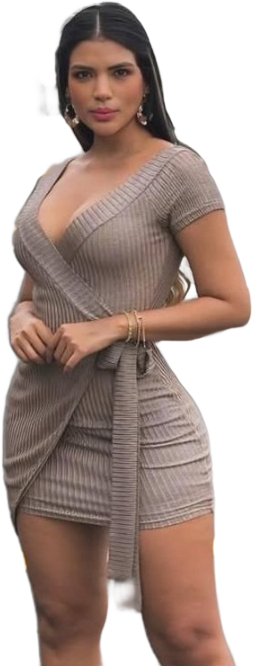
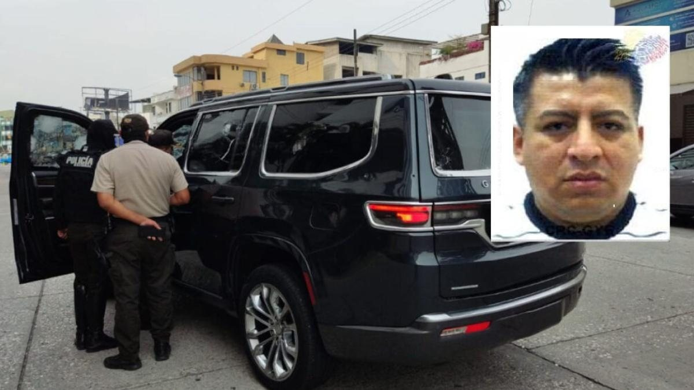

5 mar 2026 · Entrega 1
Una bomba en Urdesa
La fuente mencionó a Connie Garcés días antes. Dijo que era la pareja de Pedro Sánchez, el número dos de alias Marino, mandó papeles y pidió estar atentos a las noticias. El nombre ya estaba en la agenda de Mónica Velásquez desde el 8 de enero, al día siguiente de la muerte de Marino, anotado al margen: Connie y Pedro, segundo. El 3 de marzo dispararon contra New Phone, un local de venta de celulares en la Víctor Emilio Estrada, en Urdesa; los empleados creyeron que era una vacuna. El 4 de marzo de 2026, a las 02:10, dos hombres en moto lanzaron un explosivo. La persiana quedó destrozada, la puerta de vidrio hecha pedazos, parte del techo en el suelo. Un panfleto con los nombres tapados decía: la muñeca de la mafia, dile a tu marido que no es extorsión, que pague la plata. La plata: cerca de diez millones de dólares que Los Lagartos le reclaman a Sánchez.
No hubo heridos. Minutos después de que el reporte apareciera en redes, la fuente escribió: ahora sí me cree.
Antes de seguir
Quién es Connie Garcés
FichaConnie Garcés
- Qué hace
- Modelo, actriz y presentadora de Ecuavisa. Treinta años, ingeniera, guayaquileña, recién vuelta de Argentina.
- Por qué está en este expediente
- El 3 de marzo de 2026 dispararon contra New Phone, su local de celulares en la Víctor Emilio Estrada, en Urdesa. El 4, a las 02:10, lo bombardearon.
- El vínculo
- Según las fuentes es pareja de Pedro Sánchez, expolicía y número dos de alias Marino, y él le puso el local. Antes fue pareja del Cojo Ronald, de Samir Maestre alias La S y del policía José Luis Cantuña, los tres asesinados. En el bajo mundo la llaman la viuda.
- Situación legal
- No tiene proceso penal. Ninguna fuente la señala como narcotraficante.
- Lo que dijo
- A Diario Extra le dijo que estaba bien, que no se dejaba amedrentar y que solo tomaba la buena vibra.
Es una figura pública: la investigación la ubica en el entorno de Los Lagartos, no en el negocio.
Pasamos un día entero con Mónica Velásquez revisando la vida de alguien cuyo nombre siempre tuvimos y nunca revisamos. Hablamos con miembros de Los Lagartos. Garcés, actriz y presentadora de Ecuavisa, modelo, 30 años, ingeniera, recién vuelta de Argentina, fue pareja de Ronald Sánchez León, el Cojo Ronald, uno de los cabecillas de Los Lagartos, asesinado. Después, de Samir Maestre, alias La S, el hombre que reemplazó a Leandro Norero en la estructura, asesinado en su casa de Samborondón por policías contratados, según las fuentes por orden de Marino. Brevemente, del policía narcotraficante José Luis Cantuña, asesinado hace un año. Y luego de Pedro Sánchez. Según quienes manejan el dinero de Sánchez en la banda, él le puso el local después de una pelea. Nadie pregunta por el Mitsubishi Montero Sport y el BMW X5 del año anterior a su nombre, más de 150.000 dólares, ni por la casa en Villaclub a nombre de su madre, ni por los relojes Rolex, con un sueldo de televisión.
¿Es narco la chica Garcés? No. No trafica, ninguna fuente ha sugerido eso. El problema es que la voz en el Ecuador está todavía en manos de gente que se va a dormir con el crimen organizado.
Andersson Boscán, 5 de marzo de 2026
Hoja de contactos
Tres entregas, cuadro por cuadro
- 01
La bomba
Quién es Connie Garcés, por qué la fuente la mencionó antes del atentado y quién es Pedro Sánchez, el número dos de Los Lagartos que estaba en la cancha de Mocolí.
- 02
Los nombres
Cómo mataron a Marino: el robo de las bodegas, la traición, el círculo de seguridad, alias Mono, alias Conejo y alias Carlitos, la llamada de Pedro Sánchez a Micaela Morales y el número que cambió.
- 03
Los policías de Kada
Las fotos que agentes enviaban al narcotraficante Carlos Kada. Un mayor y un teniente identificados. El informe que nadie pide.
El número dos
Pedro Sánchez es expolicía, nacido en 1985, mano derecha de Marino y número dos de Los Lagartos. Hay pocas fotos suyas: se mueve con una guardia de diez o doce hombres en camionetas alrededor de su blindado. Estaba en la cancha de Mocolí, alquilada por Andrés Vélez Arcos, hermano de Micaela Morales, el 7 de enero de 2026, acostado boca abajo como todos, viendo pasar las botas de los sicarios que revisaban las caras una por una, cuando el grupo armado mató a Marino y a dos de su seguridad. Quedó vivo. Hoy, según nuestras fuentes, está fuera del país: quiso tomar el control de la organización y encontró una rebelión interna. El mismo 7 de enero robaron las bodegas de la organización: toneladas de cocaína y efectivo encaletado en camiones, cerca de diez millones de dólares. Sánchez reivindicó el golpe. Esa es la plata del panfleto.

La Policía atribuyó el crimen a Carlos Mantilla Ceballos, alias Choclo, líder histórico de Los Lagartos, a quien se atribuye el asesinato de Efraín Ruales. Con los días resultó poco creíble: Marino le era leal y hay hechos que despiertan sospechas. Casi una docena de conversaciones con gente de la estructura apuntan a Sánchez, por dos razones. La del corazón: Marino sospechaba que Sánchez, enamorado, le contaba cosas a Garcés y por ahí se le caían cargamentos. La del bolsillo: matar al líder te convierte en el siguiente. Los Lagartos nacieron en las cárceles de Guayaquil como alianza de sicarios y pandillas para frenar a los Choneros; son 25 a 40 hombres que deciden quién vive en el Centro de Detención Provisional, exportan cocaína a Róterdam con socios serbios y marroquíes y patentaron un método: ubicar las bodegas de grupos enemigos, robar la mercadería y enviarla ellos.
Sánchez no podía hacerlo solo. El círculo de seguridad de Marino incluía a Edwin Egas Alemán, alias Mono, el encargado de sobornar en aduanas y puertos; a Fernando García Álava, alias Conejo, encargado de traer la mercadería, es decir, la droga robada a grupos enemigos; y a Carlos García Álava, alias Carlitos, que manejaba el grupo de sicarios que asesinó a Samir bajo las órdenes de Marino y que después acabó con el propio Marino. Sánchez y uno de los García son expolicías; el escuadrón mezcla sicarios con exuniformados. Casi todos estuvieron en la cancha, salieron ilesos y luego llamaron para reivindicarse como los nuevos jefes. Una historia de Instagram de Micaela Morales los reúne a todos en una mesa: Garcés, Wendy Landa, Morales, su hermano, Eduardo Freire y Sánchez, en una de sus pocas fotos. Todos habían negado conocerse.
Ese día a Micaela Morales, la prometida de Marino, le reventaron el teléfono con mensajes que llevaban el emoji de un lagarto, la reivindicación del asesinato. Recibió una llamada que, según contó a su círculo cercano, era de Pedro Sánchez: que buscara los relojes de Marino y los entregara. Antes de cambiar de número pidió un listado de los bienes de él en el mundo, no solo lo de Dubái: varias decenas de millones. A sus abogados les dijo que creía haberse enamorado de un empresario. Está fuera del país, evitando a la justicia. El dinero de la organización se movía por empresas a nombre de Alexandra Burgos, exmujer de Marino, y de Adriana Fuentes Pacho, exconviviente de Sánchez, en un multicomercio donde Sánchez recibía dinero de la mafia china y donde pudo ocurrir el robo del 7 de enero. Tras la publicación de enero disolvieron la compañía y el 2 de febrero de 2026 crearon otra a nombre del hermano de Burgos.
Los policías de Kada
Carlos Kada era un narcotraficante. En su teléfono había una foto de una foto, tomada desde una aplicación que no permite capturas, con su mano y sus huellas: cuatro agentes de la Policía Nacional en servicio activo posando con una incautación y enviándosela, no a sus jefes, sino a él, para avisarle que la droga de sus competidores ya estaba en manos de la Policía. Incautar no para combatir el narco sino para ayudar a un narco a hacer mejores negocios. El informe incluye además fotos de los vehículos que usan los agentes de inteligencia para seguir a los narcos y los informes reservados de la Policía que Kada tenía en su poder.

Kada entregó a la Policía, por medio de la Unidad de Lucha Contra la Corrupción, la ULCO, nombres de agentes de esa misma unidad que trabajaban para la estructura de alias Gato Farfán, un narcotraficante mucho más grande que Fito, capturado en Colombia y preso en Estados Unidos como objetivo de la DEA. El informe lo recibió el comandante general Fausto Salinas y lo delegó al general Pablo Ramírez, que después terminaría preso por Metástasis. A las pocas horas empezó la cacería contra Kada. Según las fuentes, Gato Farfán se enteró y ordenó a alias Blanco, alguien cercano a Kada, matarlo por informante; cayeron casi todos los Kada. En la foto, según las fuentes, el que toma el selfie es el mayor Luis Naula, de la Unidad Nacional de Investigación de Delitos Transnacionales, la unidad que trabaja más de cerca con la embajada de Estados Unidos; a su derecha, el teniente Paul Aguilar, de la misma unidad. La Policía investigaba a los otros dos por la baja resolución de la imagen. El informe con los nombres está en la Policía Nacional.
La información no está aquí en mi canal, está allá en sus oficinas, señor comandante general.
Andersson Boscán, 13 de marzo de 2026
El sobre de fotos
Los policías de Kada
- 01Local de la presentadora, de madrugadaSin copia publicableLa bomba
La explosión en el negocio de Connie Garcés abrió la puerta a la estructura de Los Lagartos.
- 02Cancha privada, partido de exhibiciónSin copia publicableLa cancha de Mocolí
Pedro Sánchez, el número dos de alias Marino, entre los invitados.
- 03Reunión en un parqueaderoSin copia publicableLos policías con el narco
Uniformados fotografiados junto a Carlos Kada mientras le reportaban.
- 04Registro de llamadasSin copia publicableEl teléfono que cambió
La llamada de Pedro Sánchez a Micaela Morales y el número que dejó de existir.
Las imágenes fueron entregadas por agentes que participaron en la vigilancia. La Posta las publicó pixeladas para proteger a las fuentes.
Publicamos las fotos el martes 10 de marzo. El viernes 13, a las 09:27, nadie había pedido el informe: ni el ministro del Interior, John Reimberg, ni el comandante general de la Policía.
Marzo de 2026
Lo que quedó abierto
- Pedro SánchezFuera del país
- Connie GarcésSin proceso
- Carlos KadaAsesinado
- Informe con los nombres de los policíasEn la Policía, sin requerir
Actualizado el 5 de septiembre de 2026
Lo que falta
Preguntas sin responder
- Quién filtró desde la ULCO la información que precedió a la muerte de Carlos Kada
- Por qué el informe con los nombres de los policías no ha sido requerido
- Dónde está Pedro Sánchez
- Quién tiene los diez millones de las bodegas robadas el 7 de enero
Cronología
Paso a paso
- 7 ene 2026Mocolí
Matan a Marino. Pedro Sánchez está en la cancha. Ese día roban las bodegas de la organización.
- 8 ene 2026La anotación
Una fuente le dicta a Mónica Velásquez al margen de su agenda: Connie y Pedro, segundo.
- 2 feb 2026La empresa nueva
Tras la publicación de enero, la organización crea otra compañía a nombre del hermano de la exmujer de Marino.
- 3 mar 2026Las balas
Disparan contra New Phone; los empleados creen que es una vacuna.
- 4 mar 2026La bomba
Explosivo contra New Phone a las 02:10.
- 5 mar 2026Entrega 1
Quién es Garcés y quién es Sánchez.
- 6 mar 2026Entrega 2
Los nombres detrás del crimen de Marino.
- 10 mar 2026Las fotos
Policías reportando incautaciones a Carlos Kada.
- 13 mar 2026Entrega 3
Las fotos de los policías de Kada. Nadie pide el informe.
Los nombres
Quién es quién
CG
Sin proceso
Connie Garcés
Actriz y presentadora de Ecuavisa, modelo
PS
Fuera del país
Pedro Sánchez
Número dos de Los Lagartos, expolicía
SR
Asesinado
Stalin Rolando Olivero Vargas, alias Marino
Jefe de Los Lagartos, exoficial de la Armada
CK
Asesinado
Carlos Kada
Narcotraficante
MM
Fuera del país
Micaela Morales
Prometida de Marino
CM
Señalado por la Policía
Carlos Mantilla Ceballos, alias Choclo
Líder histórico de Los Lagartos
GF
Preso en EE. UU.
Gato Farfán
Narcotraficante mayor que Fito
La otra parte
Respuestas y reacciones
- Connie Garcés
Dijo a Diario Extra que estaba bien, que no se dejaba amedrentar y que solo tomaba la buena vibra. En redes había presentado el local como un negocio familiar.
- Ministerio del Interior y Policía Nacional
Hasta el 13 de marzo de 2026 no habían solicitado el informe con los nombres de los agentes ni respondido a la publicación.
Material de la investigación
Lo que no entró en el relato
Lo que se dijo al aire
Las transcripciones
El atentado contra Conny Garcés y su relación con Los Lagartos y el narco
05/03/2026 · 3.351 palabras[resoplido] De día es actriz en Ecuavisa y de noche es la primera dama de un grupo de delincuencia organizada. Es por lo que veo una persona muy famosa, varios cientos de miles de seguidores, una sonrisa colgate, un un cuerpo que ha sido esculpido curva a curva y y un montón de likes. La gente daría su vida por un montón de likes. Al parecer la chica se llama Coni Garcés. Es joven, más joven que yo, 4 años más joven.…
Leer la transcripción completaLos nombres detrás del crimen de Marino y la conexión con Conny Garcés
06/03/2026 · 5.058 palabrasarranca con otra cosa. Nunca pensamos hablar de esta chica Conig Garcés. Nunca en mi vida había escuchado de Con Garcés. No, no es problema de ella, es problema mío, que yo no eh sé mucho de eh de esos trabajos eh artísticos ecuatorianos, pero le empiezan a mencionar luego del asesinato a los dos días está en la agenda del amor y y esta eh esta historia arranca entonces con el asesinato de a quien la policía identifi…
Leer la transcripción completaLos policías de Carlos Kada: nadie los toca
13/03/2026 · 1.539 palabraspero como no dicen nada ellos, me toca decir algo a mí. Yo le recuerdo la historia a quien no la ha seguido. Esos que ven allí son cuatro policías. Están en servicio activo. Están en servicio activo. Esos cuatro policías se tomaron una foto, un selfie, y eso que ves allí abajo, evidentemente, es droga. Esos cuatro policías enviaron esta fotografía, no a la prensa, no a sus jefes para reportar el buen trabajo de la Po…
Leer la transcripción completaTranscripciones de los subtítulos automáticos de cada programa. No están corregidas a mano: sirven para buscar una frase y llegar al minuto exacto del video, no como cita textual literal.
Las piezas